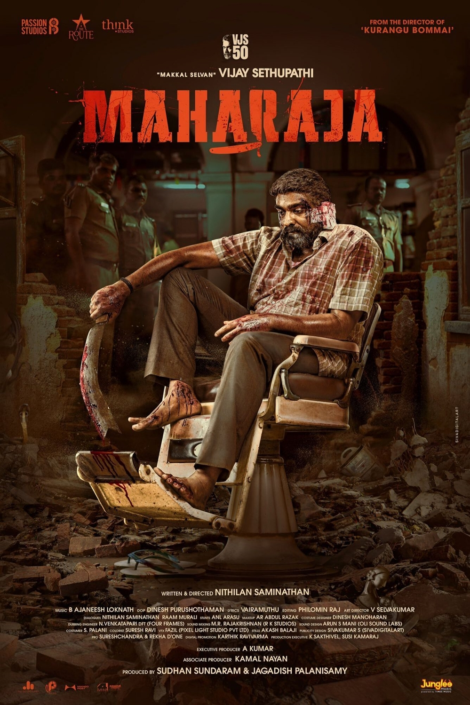

Activity 2
List of courses in Winter 2024-2025 :
- Web programming (Embedded Lab)
- Probability and statistics (Theory and Lab)
- Design and analysis of algorithms (Theory and Lab)
- Computer architecture and organisation (Theory)
- Theory of computation (Theory)
- Microprocessors and microcontrollers (Theory and Lab)
- Quantitative skills (Theory)
List the programming languages and provide rating yourself out of 10:
- Python - 7.5/10
- Java - 7/10
- C++ - 6.5/10
- C - 6/10
Summary of 3 movies:
- Movie 1: 12th Fail

- 12th Fail is about two students, Abhilash and Rani, who struggle with the pressure of passing their 12th-grade exams. The film shows the difficult reality of the education system and how it affects students' mental health. Abhilash feels lost after failing, but Rani helps him as they both deal with their challenges. They learn that success isn't just about grades, but about never giving up and staying strong. The movie teaches the importance of mental well-being, believing in yourself, and facing difficulties with courage.
- Movie 2: Amaran

- Amaran is a biographical war film about Major Mukund Varadarajan, who is a brave soldier. The story focuses on his wife, Indhu Rebecca Varghese, as she receives the Ashoka Chakra award posthumously for his heroism. The film shows the struggles and sacrifices made by Mukund during his service. It highlights themes of bravery, love, and the emotional journey of his family.
- Movie 3: Maharaja

- Maharaja is a Tamil film that follows the story of a man who rises from humble beginnings to become a powerful figure. The movie explores his journey of self-discovery, the challenges he faces, and the choices he makes along the way. It focuses on themes of ambition, power, and the struggle to maintain one's morals in a corrupt world. The protagonist's rise to prominence creates conflicts with those around him, leading to intense emotional and action-filled moments.